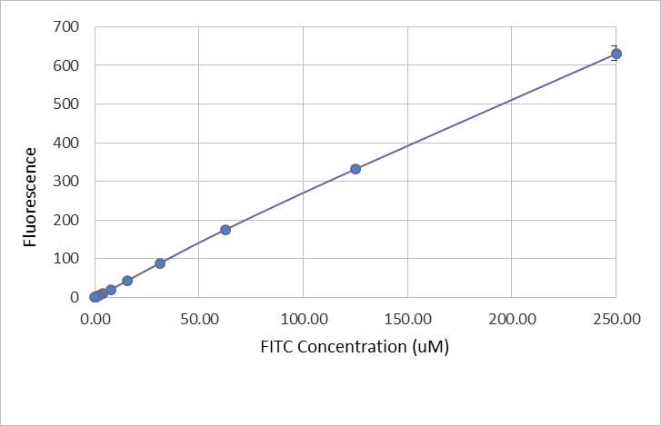
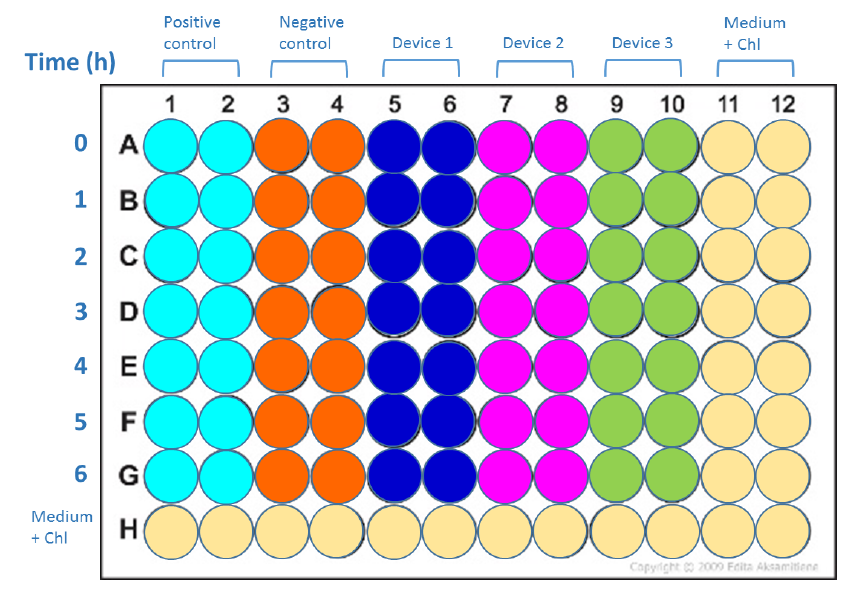
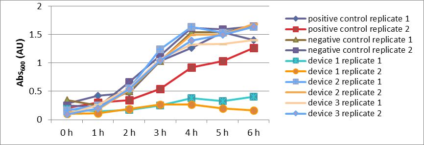
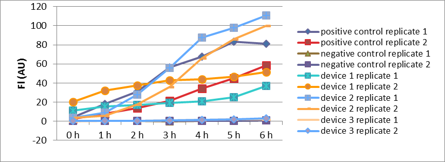
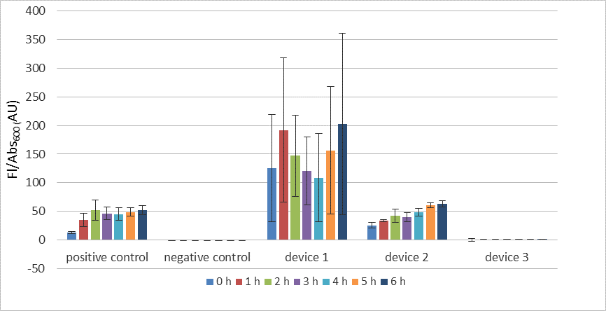

Results of measurement often vary due to methods and units employed. The results from different laboratories can only be compared when protocols and units are standardized.
Aim
Teams all over the world measure the fluorescence of the same devices with same protocols and units to study the distribution pattern of those results.
Results
Abs600 of cultures of 5 strains at selected time.
Fluorescence intensity (FI) of cultures of 5 strains at selected time.
FI/Abs600 of cultures of 5 strains at selected time.
Conclusion
The relative transcription initiation strength of three promoters is consistent with the result characterized by RFP FI yet some problems occurred when we conducted the experiment.
iGEM aims to improve the tools both available to the iGEM community and to the synthetic biology community as a whole. One of the greatest challenges in synthetic biology study is that measurements of fluorescence usually cannot be compared because results are often reported in different units or because different groups process data in different ways.
Often this work is done by doing some sort of "relative expression" comparison; however, being unable to directly compare measurements makes it harder to debug engineered biological constructs, harder to effectively share constructs between laboratories, and even harder to just interpret experimental controls.
Aim
We used plate reader to measure bacterial GFP fluorescence intensity, results of which could indirectly characterize the transcription initiation strength of corresponding promoters in a common, comparable way. Moreover, since the same experiments are being conducted by teams from all over the world following same protocols, the international iGEM community tries to answer questions of major significance: how close can the results be when fluorescence is measured in laboratories all around the world and, with results being normalized in a common, comparable unit, what are the distribution pattern of these results.
Method
Cell Transformation
The following plasmids were transformed in to Escherichia coli DH5α:
Positive control
Negative control
Device 1: J23101+I13504
Device 2: J23106+I13504
Device 3: J23117+I13504
Transformants Selection
2 colonies from each plate were picked and inoculated in 5 mL LB medium (with 35 ng/μL chloramphenicol) in a 15 mL tube. Cells were incubated overnight for 16 h at 37oC and 220 rpm.
Cell Preservation
500 μL of each of the 10 overnight cell cultures was mixed with 500 μL 80% glycerol and the mixture was preserved at -80 oC.
Calibration
OD600 Reference Point
100 μL LUDOX was added in to wells A1, B1, C1, D1.
100 μL LUDOX was added in to wells A1, B1, C1, D1.
The absorbance at 600 nm of all samples was measured in standard measurement mode of our plate reader.
Data was recorded and is shown in Table 1.
Table 1. OD600 Reference Point
sample
LUDOX
H2O
replicate 1
0.045
0.040
replicate 2
0.045
0.039
replicate 3
0.043
0.041
replicate 4
0.043
0.039
average
0.044
0.040
corrected Abs600
0.004
reference OD600
0.015
correction factor
3.435306
FITC Fluorescence Standard Curve
Prepare the FITC stock solution
The content in the FITC stock tube was spun down.
The FITC pellet was resuspended in 1 mL of 1x PBS to prepare 2x FITC stock solution (500 μM).
The solution was incubated at 42oC for 4 h.
The 2x FITC stock solution was diluted in half with 1x PBS to make a 1x FITC solution (250 μM).
Prepare the serial dilutions of FITC
100 μL of PBS was added into wells A2, B2, C2, D2...A12, B12, C12, D12.
200 μL of FITC 1x stock solution was added into A1, B1, C1, D1.
100 μL of FITC stock solution was transferred from A1 into A2.
A2 was mixed by pipetting up and down and 100 μL was transferred into A3.
A3 was mixed by pipetting up and down and 100 μL was transferred into A4.
A4 was mixed by pipetting up and down and 100 μL was transferred into A5.
A5 was mixed by pipetting up and down and 100 μL was transferred into A6.
A6 was mixed by pipetting up and down and 100 μL was transferred into A7.
A7 was mixed by pipetting up and down and 100 μL was transferred into A8.
A8 was mixed by pipetting up and down and 100 μL was transferred into A9.
A9 was mixed by pipetting up and down and 100 μL was transferred into A10.
A10 was mixed by pipetting up and down and 100 μL was transferred into A11.
A11 was mixed by pipetting up and down and 100 μL was transferred into liquid waste.
Series dilution was repeated for rows B, C, D.
Fluorescence of all samples were measured in the standard measurement modes of our plate reader.
Data was recorded and is shown in Figure 1.

Figure 1. FITC Standard Curve
Cell Recovery
5 μL of preservation mixture of each of the 10 colonies was inoculated in 5 mL LB medium (with 35 ng/μL chloramphenicol) in a 15 mL tube. Cells were incubated overnight for 15 h at 37oC and 220 rpm.
Cell growth, Sampling and Assay
The plate reader was set to read OD600.
OD600 of the overnight cultures was measured and the data shown in Table 2.
Table 2. Normalization
sample
Abs600 reading
volume of preloading culture
volume of preloading media
group1
group2
group1
group2
group1
group2
positive control
0.397
0.391
0.559
0.568
9.441
9.432
negative control
0.401
0.419
0.553
0.526
9.447
9.474
device 1
0.395
0.376
0.561
0.593
9.439
9.407
device 2
0.399
0.332
0.556
0.683
9.444
9.317
device 3
0.360
0.320
0.622
0.711
9.378
9.289
media+chl
0.039
The cultures were diluted to a target OD600 of 0.02 in 10 mL LB medium (with 35 ng/μL chloramphenicol) in 50 mL falcon tubes.
The cultures were incubated at 37oC and 220 rpm.
100 μL samples of the culture were taken at 0, 1, 2, 3, 4, 5 and 6 hours of incubation.
The samples were placed on ice.
Samples were laid out according to Figure 2. 100 μL of each sample was pipetted into each well. The settings of the plate reader were set as those that had given us the best results in calibration curves.
Data was recorded.

Figure 2. Sample layout in 96-well plate
Result
The Abs600 values of cell cultures at selected time are shown in Table 3 and Figure 3. The Abs600 values of device 1 at all time periods are much lower than the other groups. The Abs600 values of other groups represent a similar pattern, while group 2 of positive control shows a slightly slower cell growth.
Table 3. Abs600 of cultures at selected time
sample
positive control
negative control
device 1
device 2
device 3
group 1
group 2
group 1
group 2
group 1
group 2
group 1
group 2
group 1
group 2
0 h
0.285
0.204
0.345
0.251
0.187
0.106
0.167
0.127
0.093
0.095
1 h
0.425
0.300
0.253
0.221
0.150
0.114
0.250
0.184
0.260
0.200
2 h
0.477
0.346
0.499
0.666
0.175
0.190
0.550
0.526
0.558
0.540
3 h
1.035
0.545
1.035
1.126
0.246
0.264
1.237
1.041
1.069
1.046
4 h
1.262
0.920
1.540
1.622
0.381
0.270
1.640
1.500
1.328
1.394
5 h
1.545
1.030
1.540
1.596
0.323
0.198
1.532
1.495
1.334
1.498
6 h
1.403
1.262
1.640
1.641
0.406
0.164
1.636
1.691
1.401
1.633
Average
0.789
0.998
0.227
0.970
0.889

Figure 3. Abs600 of cultures at selected time
Fluorescence intensity (FI) data is shown in Table 4 and Figure 4. Device 1, device2 and positive control show a rather strong fluorescence, as expected, while the fluorescence of device 3 is almost imperceptible compared with other experiment groups.
Table 4. FI of cultures at selected time
sample
positive control
negative control
device 1
device 2
device 3
group 1
group 2
group 1
group 2
group 1
group 2
group 1
group 2
group 1
group 2
0 h
4.017
2.358
0.147
0.142
11.062
20.258
3.693
3.739
-0.131
0.233
1 h
18.214
8.060
0.137
0.091
15.416
31.959
8.847
5.976
0.275
0.233
2 h
31.135
13.761
0.338
0.162
17.046
37.580
27.570
17.815
0.404
0.539
3 h
56.390
21.157
0.074
0.143
19.464
43.071
55.942
35.669
0.914
0.805
4 h
67.640
34.280
0.282
0.346
20.594
44.112
87.633
65.949
1.288
1.358
5 h
83.184
44.882
0.433
0.553
25.112
46.501
97.999
86.125
1.792
2.013
6 h
80.972
58.540
0.892
0.870
36.853
51.424
110.451
100.151
2.188
2.874
Average
37.471
0.329
30.032
50.540
1.056

Figure 4. FI of cultures at selected time
Fluorescence intensity/Abs600data is shown in Table 5 and Figure 5, which is rather favorable to our expectation. Device 1 shows the highest fluorescence while device 2 and positive control show similar but lower fluorescence intensity. The fluorescence intensity of device 3 is still very low as to an imperceptible level.
Table 5. FI/Abs600 of cultures at selected time
sample
positive control
negative control
device 1
device 2
device 3
group 1
group 2
group 1
group 2
group 1
group 2
group 1
group 2
group 1
group 2
0 h
14.101
11.565
0.427
0.564
59.202
191.792
22.105
29.492
(1.416)
2.453
1 h
42.901
26.890
0.540
0.412
102.772
280.876
35.446
32.475
1.060
1.167
2 h
65.207
39.756
0.678
0.244
97.204
197.314
50.156
33.865
0.724
0.998
3 h
54.469
38.856
0.072
0.127
78.964
163.020
45.213
34.264
0.854
0.770
4 h
53.589
37.255
0.183
0.213
54.112
163.232
53.435
43.967
0.970
0.975
5 h
53.849
43.569
0.281
0.346
77.676
235.292
63.961
57.604
1.343
1.344
6 h
57.716
46.374
0.544
0.530
90.863
314.217
67.522
59.222
1.562
1.760
Average
41.864
0.369
150.467
44.909
1.040

Figure 5. FI/Abs600 of cultures at selected time
Discussion
Our result of the relative transcription initiation strength of the three promoters is consistent with the result characterized by RFP fluorescence intensity provided by iGEM headquarter. Three problems, however, can be observed in our results. First, the cell growth of device 1 was slower than all other four groups. This phenomenon could be explained as the growth of device 1 cells was hindered by the translation of GFP most severely. In addition, the FI/Abs600 data of device 1 is not as stable as other groups represent. We first suspected that this was due to the deviation during sampling. However, we also noticed that, according to Table 5, the vibration patterns of the two replicates of device 1 at selected times were almost identical, thus this possibility could be excluded. Before further evidences are collected, we could only hypothesize that this phenomenon might be caused by unique biochemistry process of device 1 cells. Moreover, the fluorescence intensity of device 3 was too weak as to fail to show significant difference from negative control. One possible explanation is that the promoter of device 3 is too weak under our culture condition. Another explanation could be that the observed fluorescence intensity of negative control cells is higher than real situation due to the sample layout pattern in the 96-well plate while measuring the fluorescence. Considering that the samples of negative control are placed between positive control and device 1 and that the 96-well plate that we use is transparent, the fluorescence leakage of positive control and device 1 might enhance the measured fluorescence intensity of negative control. Thus we suggest that the protocol for plate reader relating to the usage of 96-well plate should be adjusted, allowing teams to use black 96-well plate when measuring fluorescence while use transparent 96-well plate for Abs600 measuring.